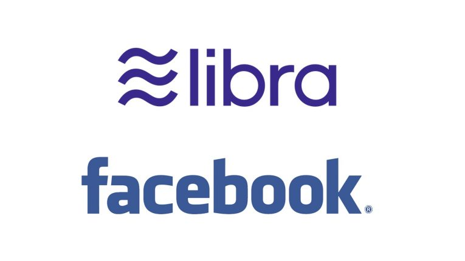

페이스북이 주도하는 가상화폐(암호화폐) 리브라(Libra)가 당초 계획과 달리 달러, 유로 등 각국 통화에 연동하는 다양한 형태의 ‘스테이블 코인’으로 개발된다. 각국 금융감독당국의 압박에 글로벌 시장을 통합하는 단일 가상화폐를 내놓겠다는 계획을 변경한 것으로 관측된다.
페이스북은 16일(현지시간) 공개한 ‘리브라 백서 2.0’을 통해 리브라를 스테이블 코인 형태로 선보인다고 밝혔다. 스테이블 코인은 가격 변동성을 최소화하도록 설계한 가상화폐다. ‘1달러=1코인’처럼 기존 통화에 고정한 가치로 발행한다.페이스북은 지난해 6월 리브라 구상을 발표하면서 달러, 유로, 미국 재무부 채권 등으로 구성된 통화 바스켓에 연동하는 글로벌 단일 가상화폐를 내놓겠다고 밝혔다. 하지만 각국 정치권과 규제당국은 리브라가 중앙은행을 위협하고 세계 금융의 안정성을 해칠 수 있다며 우려의 목소리를 높였다. 각국 정부의 압박이 이어지면서 리브라연합에 참여한 페이팔, 이베이, 마스터카드 등 주요 기업이 탈퇴하기도 했다.
